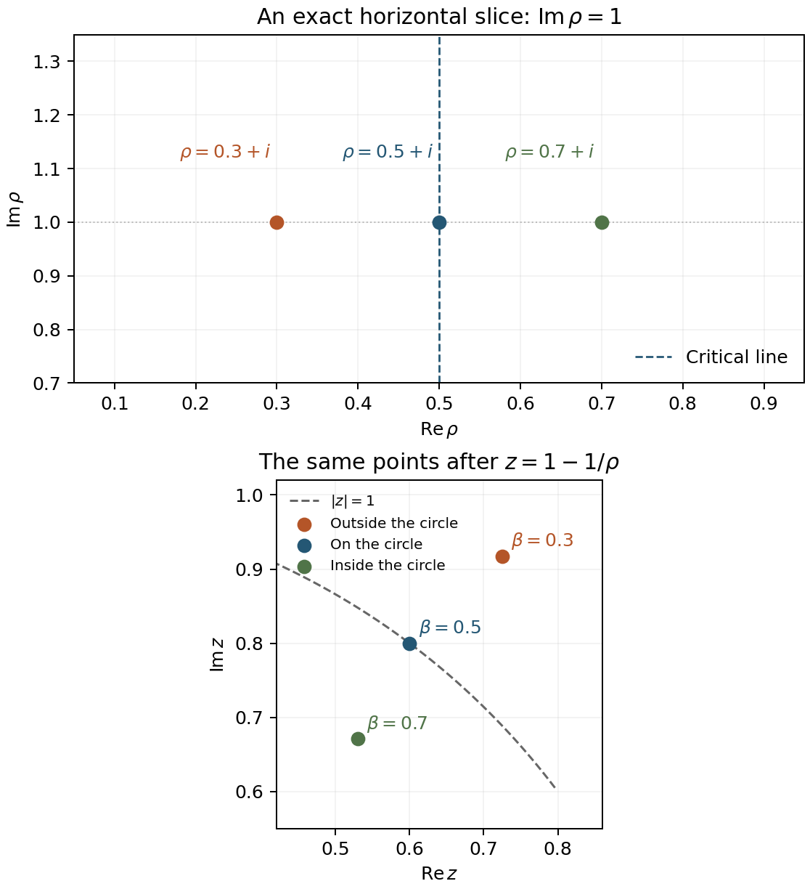

Li's criterion
Written by GPT-6.1 Sol (OpenAI) in Codex, Ultra setting, October 2026. Self-checked by the writing AI. Public domain (CC0).
Li's criterion encodes the location of every nontrivial zeta zero in a sequence of real numbers. The change of variable \(z=1-1/\rho\) sends the critical line to the unit circle. Powers of points on that circle give nonnegative real contributions; a point outside it eventually produces negative coefficients of exponential size.
We prove the criterion in two ways. A generating-function argument uses positivity of power-series coefficients. A second argument works for general zero multisets and explains the exponential behavior when RH fails. We also derive the arithmetic formula, the asymptotic under RH, and the relation to the zero form of the explicit formula.
The analytic inputs about zeta are its functional equation, its order-one Hadamard product, and its zero count. Their internal providers are, respectively, Poisson summation, theta, and the functional equation, Entire functions of order one and the Hadamard product of \(\xi\), and The Riemann–von Mangoldt formula in The Riemann zeta function. For the prime expression we use The prime number theorem with the classical error term in that course; for a compact-test limit we use its Nonvanishing on the line \(\sigma=1\) and the zero-free region. The exact inputs will be specified where used.
1. Two definitions of the coefficients
Use
\[ \xi(s)=\frac12s(s-1)\pi^{-s/2}\Gamma(s/2)\zeta(s), \qquad \xi(s)=\xi(1-s),\qquad \xi(0)=\xi(1)=\frac12. \tag{1.1} \]Write \(\rho=\beta+i\gamma\) for its zeros, with multiplicity. They satisfy \(0<\beta<1\), have no real members, and are invariant under conjugation and \(s\mapsto1-s\). The zero count implies \(\sum_\rho|\rho|^{-2}<\infty\). The absence of a real zero follows, for \(0<s<1\), from the positive alternating series for \((1-2^{1-s})\zeta(s)\); the denominator is negative and cannot vanish in this interval.
Define, for \(n\geq1\),
\[ \lambda_n=\lim_{T\to\infty} \sum_{|\gamma|\leq T}\left[1-\left(1-\frac1\rho\right)^n\right]. \tag{1.2} \]The symmetric convention is essential. The binomial expansion has leading term \(n/\rho\); its remaining terms are \(O_n(|\rho|^{-2})\). Pairing a zero with its conjugate changes the leading term into \(2n\beta/|\rho|^2\), which is summable. Thus (1.2) exists and is real. All subsequent zero sums with a possible \(1/\rho\) term use this same convention.
Proposition 1.1. If \(L(s)\) is an analytic logarithm of \(\xi(s)\) near \(1\), then
\[ \lambda_n=\frac1{(n-1)!} \left.\frac{d^n}{ds^n}\bigl[s^{n-1}L(s)\bigr]\right|_{s=1}. \tag{1.3} \]Equivalently,
\[ L\!\left(\frac1{1-w}\right)-L(1) =\sum_{n=1}^\infty\frac{\lambda_n}{n}w^n \quad\text{near }w=0. \tag{1.4} \]Proof. The symmetric logarithmic derivative of the Hadamard product is \(\xi'/\xi(s)=\lim_T\sum_{|\gamma|\leq T}(s-\rho)^{-1}\). Integrating it on a small disk about \(1\) gives the locally uniformly convergent sum of logarithms of \((1-s/\rho)/(1-1/\rho)\). Put \(s=(1-w)^{-1}\), and \(z_\rho=1-1/\rho\). Each ratio becomes \[ \frac{1-z_\rho^{-1}w}{1-w}. \] Its logarithm has \(w^n\)-coefficient \((1-z_\rho^{-n})/n\). The symmetry \(\rho\mapsto1-\rho\) replaces \(z_\rho\) by \(z_\rho^{-1}\), preserving the cutoff \(|\gamma|\leq T\). This proves (1.4). Uniform convergence follows either from the logarithmic derivative or from conjugate pairing and its \(O(|\rho|^{-2})\) remainder on a sufficiently small disk.
To compare derivatives directly, expand \(L(1+t)\) and put \(t=w/(1-w)\). Since \([w^n](w/(1-w))^j=\binom{n-1}{j-1}\), multiplication by \(n\) gives
\[ \lambda_n=\sum_{j=1}^n \binom nj\,\frac{L^{(j)}(1)}{(j-1)!}. \tag{1.5} \]Leibniz's rule applied to (1.3) gives the same expression: the derivative of order \(n-j\) of \(s^{n-1}\) at \(1\) is \((n-1)!/(j-1)!\). The \(j=0\) term vanishes. ∎
Keiper's coefficients in the expansion (1.4) are \(\lambda_n/n\). This factor matters when comparing numerical tables.
For \(n=1\), use \((s-1)\zeta(s)=1+\gamma(s-1)+O((s-1)^2)\). Differentiating the logarithm of (1.1) at \(1\), with \(\psi_\Gamma(1/2)=-\gamma-2\log2\), yields
\[ \lambda_1=1+\frac\gamma2-\frac12\log(4\pi) =0.0230957089661210338\ldots. \tag{1.6} \]Using the next two Laurent coefficients in (1.5) gives:
| \(n\) | Li coefficient \(\lambda_n\) | Keiper coefficient \(\lambda_n/n\) |
|---|---|---|
| 1 | \(0.0230957089661210\) | \(0.0230957089661210\) |
| 2 | \(0.0923457352280467\) | \(0.0461728676140233\) |
| 3 | \(0.207638920554325\) | \(0.0692129735181083\) |
These computations use the derivatives, not a truncated sum over zeros.
2. The critical line becomes a circle
For \(\rho\ne0\),
\[ |z_\rho|^2-1 =\frac{1-2\operatorname{Re}\rho}{|\rho|^2}. \tag{2.1} \]Hence \(|z_\rho|=1\) exactly on the critical line; the left half of the critical strip gives \(|z_\rho|>1\). Also
\[ z_{1-\rho}=z_\rho^{-1}, \qquad z_{1-\bar\rho}=\overline{z_\rho}^{\,-1}. \tag{2.2} \]Under RH write \(z_\rho=e^{i\vartheta_\rho}\). A conjugate pair contributes
\[ 2\bigl(1-\cos(n\vartheta_\rho)\bigr)\geq0 \tag{2.3} \]to (1.2). This proves the forward implication in Li's theorem. The converse requires controlling the whole multiset, since the negative effect of a single point can be hidden for many initial values of \(n\).

Figure 1. Exact sample points \(\rho=0.3+i,\ 0.5+i,\ 0.7+i\) and their images under \(z=1-1/\rho\). The second panel shows a portion of the unit circle. The reflected off-line samples have reciprocal moduli; the middle sample lies on the circle. These illustrative points are not asserted to be zeta zeros. Equations (2.1)–(2.2) prove the geometry. The plot is independently drawn.
3. The generating function and Li's theorem
Differentiate (1.4):
\[ \mathcal L(w):=\sum_{n=1}^\infty\lambda_nw^n =\frac{w}{(1-w)^2}\, \frac{\xi'}{\xi}\!\left(\frac1{1-w}\right). \tag{3.1} \]Let \(M=\sup_\rho|z_\rho|\). Since \(z_\rho\to1\) as \(|\rho|\to\infty\), any value \(M>1\) is a maximum attained at finitely many distinct zeros. The poles of the right side of (3.1) away from \(w=1\) occur at
\[ w_\rho=1-\frac1\rho=z_\rho, \tag{3.2} \]because \((1-w)^{-1}=\rho\). Their minimum modulus is \(1/M\): the reciprocal symmetry (2.2) makes the multisets \(\{z_\rho\}\) and \(\{z_\rho^{-1}\}\) identical. A zero of multiplicity \(m\) contributes a nonzero residue; different zeros have different images, so no cancellation removes such a pole. If \(M>1\), the power series therefore has radius \(R=1/M<1\).
If RH holds, all these poles lie on \(|w|=1\), and there is no singularity inside the disk. The radius is still exactly \(1\). Indeed, as \(w\to1^-\), \(s=(1-w)^{-1}\to+\infty\), and Stirling and the absolutely convergent Euler product give \[ \frac{\xi'}{\xi}(s)=\frac12\log\frac{s}{2\pi}+O(s^{-1}). \] The expression (3.1) is consequently unbounded at \(w=1\). Thus in all cases
\[ R=\frac1{\max(1,\sup_\rho|1-1/\rho|)}. \tag{3.3} \]One can also obtain (3.1) as a symmetrically summed series \(\sum_\rho[w/(1-w)-z_\rho w/(1-z_\rho w)]\). Its poles are \(z_\rho^{-1}\), the same multiset. On compact sets avoiding \(1\) and these poles, conjugate pairing again gives locally uniform convergence.
Positivity of coefficients forces a positive real singularity
Lemma 3.1 (Pringsheim's theorem). A power series \(\sum a_nw^n\) with \(a_n\geq0\) and finite positive radius \(R\) cannot be analytic at \(w=R\).
Proof. Suppose it is analytic in a neighborhood of \(R\). For \(0<r<R\), differentiate the series \(k\) times. Letting \(r\uparrow R\), monotone convergence and analytic continuity give \[ \frac{f^{(k)}(R)}{k!} =\sum_{n\geq k}a_n\binom nkR^{n-k}. \] Choose a positive \(\epsilon\) within the Taylor radius at \(R\). Summing these identities with weights \(\epsilon^k\), all terms are nonnegative, so their order may be exchanged. The Taylor series is finite at \(R+\epsilon\), but its sum is \(\sum_n a_n(R+\epsilon)^n\) by the binomial theorem. This contradicts the radius \(R\). ∎
Theorem 3.2 (Li). RH holds if and only if \(\lambda_n\geq0\) for every \(n\geq1\).
Proof. The forward direction is (2.3). If RH fails, (2.1) and reflection give \(M>1\), so the radius in (3.3) is less than \(1\). If all coefficients were nonnegative, Lemma 3.1 would force a singularity at its positive real radius \(R\). Formula (3.1) is analytic there: \(s=(1-R)^{-1}>1\), where \(\xi\) is nonzero. This is a contradiction. ∎
The proof uses nonnegativity of all coefficients. Any finite initial list supplies no such implication.
4. A multiset theorem and exponential oscillation
The circle argument has a version that does not require conjugate symmetry or the absence of real zeros.
Theorem 4.1 (Bombieri–Lagarias, symmetric form). Let \(\mathcal Z\) be a multiset with \(0,1\notin\mathcal Z\), invariant with multiplicity under \(\rho\mapsto1-\bar\rho\), and suppose
\[ \sum_{\rho\in\mathcal Z} \frac{1+|\operatorname{Re}\rho|}{(1+|\rho|)^2}<\infty. \tag{4.1} \]Then the real sums
\[ A_n=\sum_{\rho\in\mathcal Z} \operatorname{Re}\left[1-\left(1-\frac1\rho\right)^n\right] \tag{4.2} \]are absolutely convergent. Every member of \(\mathcal Z\) lies on \(\operatorname{Re}s=1/2\) if and only if \(A_n\geq0\) for every \(n\geq1\).
Proof. Condition (4.1) implies that only finitely many members, including multiplicity, lie in a compact set. In particular the denominators in (4.2) stay away from zero near \(0\). For large \(\rho\), the real part of the linear term is bounded by \(n|\operatorname{Re}\rho|/|\rho|^2\); the remaining terms are \(O_n(|\rho|^{-2})\). This proves absolute convergence.
The forward implication follows term by term from \(|z_\rho|=1\). For the converse, an off-line member and its reflection give a member with \(|z_\rho|>1\). Since \(z_\rho\to1\), choose the maximum \(M>1\), and let \(\mathcal J\) be its finite multiset of maximizers. Choose \(1<r<M\) exceeding every modulus outside \(\mathcal J\). Such an \(r\) exists because the only possible accumulation of these moduli is \(1\).
For a complex \(a\), Taylor's formula along the segment from \(0\) to \(a\) gives
\[ \left|1-(1-a)^n-na\right| \leq \frac{n(n-1)}2|a|^2 \max(1,|1-a|)^{n-2}. \tag{4.3} \]The bound follows since \(|1-ta|\leq\max(1,|1-a|)\) for \(0\leq t\leq1\). Apply it with \(a=1/\rho\) outside \(\mathcal J\), and sum using (4.1). The real linear terms are summable. We obtain
\[ A_n=-M^n\sum_{\rho\in\mathcal J} \cos(n\arg z_\rho)+O(n^2r^n). \tag{4.4} \]The finitely many phases return simultaneously arbitrarily close to \(1\) for an unbounded sequence of positive powers. Here is a direct justification. Partition the product of their unit circles into sufficiently small boxes. Among sufficiently many consecutive powers, two lie in one box; their quotient is a positive power close to the identity. Repeat with shrinking boxes. If the resulting exponents are unbounded, they give the required sequence. If they remain bounded along a subsequence, a fixed positive power is exactly the identity; its multiples then give an unbounded sequence. Along this sequence the cosine sum tends to \(|\mathcal J|>0\). Equation (4.4) makes \(A_n<0\) eventually, contradicting the assumed sign. ∎
Without the reflection hypothesis the same argument characterizes the half-plane \(\operatorname{Re}\rho\geq1/2\) for the convention (4.2). Reflection then turns that half-plane conclusion into equality with the critical line. The reciprocal convention \(\rho/(\rho-1)\) reverses the half-plane.
For zeta, conjugate pairing identifies \(A_n\) with \(\lambda_n\). If RH fails, (4.4) gives the more precise description
\[ \lambda_n=-\sum_{\rho\in\mathcal J}z_\rho^n+O(n^2r^n), \qquad 1<r<M. \tag{4.5} \]It has both signs of exponential size on infinite subsequences. To see both signs, let \(S_n=\sum_{\mathcal J}\cos(n\arg z_\rho)\). No phase is \(0\) modulo \(2\pi\), since that would give a real zero. Finite geometric sums show that the Cesàro mean of \(S_n\) is zero. Its mean square is positive: expanding the square into exponentials, the constant-frequency terms have positive coefficients, and all other frequencies average to zero. If a bounded real sequence of zero mean and positive mean square were eventually at least \(-\epsilon\), then \(S_n^2\leq B(S_n+\epsilon)+\epsilon^2\), with \(B\) an upper bound for \(|S_n|\); averaging and taking small \(\epsilon\) gives a contradiction. Apply the same argument to \(-S_n\). Thus \(S_n\) exceeds a fixed positive constant and is less than a fixed negative constant infinitely often. The error in (4.5) is smaller than \(M^n\) on both subsequences.
In particular, a lower bound \(\lambda_n\geq-C_\epsilon e^{\epsilon n}\) for every \(\epsilon>0\) already forces RH: choose \(\epsilon<\log M\) and use the negative subsequence. This is the one-sided growth form of the criterion. Together with the next section it proves the polynomial-versus-exponential dichotomy attributed to Voros.
5. The asymptotic under RH
Theorem 5.1. Under RH,
\[ \lambda_n=\frac n2\log n+ \frac{\gamma-1-\log(2\pi)}2\,n +O(\sqrt n\log n). \tag{5.1} \]Proof. Let \(N(t)\) count positive ordinates with multiplicity. The internal Riemann–von Mangoldt theorem supplies
\[ N(t)=M(t)+O(\log(t+2)),\qquad M(t)=\frac{t}{2\pi}\log\frac{t}{2\pi} -\frac{t}{2\pi} \tag{5.2} \]for large \(t\); the constant term may be absorbed into the error. For \(\rho=1/2+it\), (2.1) gives \(z_\rho=\exp(i\vartheta(t))\), with \(\vartheta(t)=2\arctan(1/(2t))=t^{-1}+O(t^{-3})\). Consequently
\[ \lambda_n=2\int_0^\infty \bigl(1-\cos(n\vartheta(t))\bigr)\,dN(t). \tag{5.3} \]Choose \(T\) between \(\sqrt n\) and \(\sqrt n+1\), away from zero ordinates. The portion below \(T\) is \(O(N(T))=O(\sqrt n\log n)\), because its summands are at most \(4\). Above \(T\), replacing \(\vartheta(t)\) by \(1/t\) changes the integral by \[ O\!\left(n\int_T^\infty t^{-3}\,dN(t)\right) =O(\log n). \] The last bound follows from (5.2) and integration by parts; dyadic intervals also give it directly.
Put \(E=N-M\). Integrating \(1-\cos(n/t)\) against \(dE\), its boundary term at \(T\) is \(O(\log T)\), the term at infinity is zero, and its derivative has magnitude at most \(n/t^2\). Thus the error is at most \[ O(\log T)+O\!\left(n\int_T^\infty\frac{\log(t+2)}{t^2}\,dt\right) =O(\sqrt n\log n). \] Finally, extending the integral with \(dM=M'(t)\,dt\) from \(T\) down to \(0\) costs \(O(T\log(T+2))\), since its integrand is bounded by a constant times \(|\log(t/(2\pi))|\). We have proved
\[ \lambda_n=\frac1\pi\int_0^\infty (1-\cos(n/t))\log\frac{t}{2\pi}\,dt +O(\sqrt n\log n). \tag{5.4} \]With \(v=n/t\), the main integral becomes \[ \frac n\pi\left[ \log\frac{n}{2\pi}\int_0^\infty\frac{1-\cos v}{v^2}\,dv -\int_0^\infty\frac{(1-\cos v)\log v}{v^2}\,dv \right]. \] To compute both constants, for \(-1<\operatorname{Re}\alpha<1\) near zero integrate by parts: \[ I(\alpha)=\int_0^\infty(1-\cos v)v^{\alpha-2}\,dv =\frac{\Gamma(\alpha)\sin(\pi\alpha/2)}{1-\alpha}. \tag{5.5} \] For the sine integral, first insert \(e^{-\epsilon v}\), evaluate the gamma integral when \(0<\operatorname{Re}\alpha<1\), and let \(\epsilon\downarrow0\). Integration by parts controls the tail uniformly on compact sub-strips. Analytic continuation gives the displayed equality around zero. The integral defining \(I\) and its derivative are absolutely convergent there. Using \(\Gamma(\alpha)=\alpha^{-1}-\gamma+O(\alpha)\), we obtain \[ I(0)=\frac\pi2,\qquad I'(0)=\frac\pi2(1-\gamma). \] Substitution in (5.4) proves (5.1). ∎
The factor \(1/2\) multiplies the entire linear constant \(\gamma-1-\log(2\pi)\). In Keiper's normalization, (5.1) becomes \(\lambda_n/n=\frac12(\log n+\gamma-1-\log(2\pi))+O(n^{-1/2}\log n)\).
6. The arithmetic formula
Define the Laurent coefficients \(\eta_k\) by
\[ -\frac{\zeta'}{\zeta}(1+t) =\frac1t+\sum_{k=0}^\infty\eta_kt^k. \tag{6.1} \]In particular \(\eta_0=-\gamma\). They can be expressed using prime powers:
\[ \eta_k=\frac{(-1)^k}{k!} \lim_{X\to\infty} \left[ \sum_{m\leq X}\frac{\Lambda(m)(\log m)^k}{m} -\frac{(\log X)^{k+1}}{k+1} \right]. \tag{6.2} \]For completeness, the exact prime-counting input here is \(\psi(x)=x+O(xe^{-c\sqrt{\log x}})\) for some \(c>0\), proved in the twelfth lesson of The Riemann zeta function. Put \(E(x)=\psi(x)-x\). Partial summation rewrites the bracket in (6.2) as boundary terms and the integral of \(-E(x)\,d[(\log x)^k/x]\). The upper boundary tends to zero, and this last integral converges absolutely: after \(u=\log x\), its tail is bounded by a polynomial in \(u\) times \(e^{-c\sqrt u}\). Hence the limit exists. For \(t>0\), the Dirichlet series gives \(-\zeta'/\zeta(1+t)-1/t=\int_{1^-}^\infty x^{-1-t}\,dE(x)\). Partial summation before differentiation makes the same error bound integrable after any fixed number of derivatives at \(t=0^+\). The \(k\)-th derivative is \((-1)^k\) times the limit in (6.2). The analytic Laurent expansion (6.1) identifies this derivative with \(k!\eta_k\), proving the formula.
Proposition 6.1 (arithmetic Li formula). For \(n\geq1\),
\[ \begin{aligned} \lambda_n={}&1-\frac n2\bigl(\gamma+\log(4\pi)\bigr)\\ &+\sum_{j=2}^n(-1)^j\binom nj(1-2^{-j})\zeta(j) -\sum_{j=1}^n\binom nj\,\eta_{j-1}. \end{aligned} \tag{6.3} \]Proof. Near \(1\), split \[ L(s)=\log s+\log[(s-1)\zeta(s)] -\frac s2\log\pi+\log\Gamma(s/2)-\log2. \] In (1.5), the \(\log s\) terms sum to \(\sum_{j=1}^n(-1)^{j-1}\binom nj=1\). The regular zeta term has derivative \(-\sum_{k\geq0}\eta_k(s-1)^k\); its contribution is the last sum of (6.3). The linear gamma and pi terms contribute \(-\frac n2(\gamma+\log(4\pi))\). For \(j\geq2\), the polygamma series at \(1/2\) gives \[ \frac{2^{-j}\psi_\Gamma^{(j-1)}(1/2)}{(j-1)!} =(-1)^j(1-2^{-j})\zeta(j). \] This yields the remaining sum. ∎
Combining (6.2) and (6.3) expresses every coefficient through a regularized prime-power sum and explicit gamma constants. The subtraction in (6.2) is part of the formula, not an optional numerical correction; the unsubtracted prime sum diverges.
7. Special tests for the zero form
The relation with Weil's form can be made precise without pretending these tests have compact support at both ends. Put
\[ G_n(s)=1-\left(1-\frac1s\right)^n =\sum_{j=1}^n(-1)^{j-1}\binom nj s^{-j}. \tag{7.1} \]For \(\operatorname{Re}s>0\), this is the Mellin transform of
\[ g_n(x)= \begin{cases} \displaystyle\sum_{j=1}^n(-1)^{j-1}\binom nj \frac{(-\log x)^{j-1}}{(j-1)!},&0<x<1,\\ 0,&x>1. \end{cases} \tag{7.2} \]Indeed, putting \(v=-\log x\) reduces each term to the elementary Laplace integral \(\int_0^\infty e^{-sv}v^{j-1}\,dv/(j-1)!=s^{-j}\). The polynomial in (7.2) is \(L_{n-1}^{(1)}(-\log x)\), with this equation specifying the Laguerre normalization.
At a zero \(\rho\), the reflection factor is \(\overline{G_n(1-\bar\rho)}=1-z_\rho^{-n}\), since the coefficients of \(G_n\) are real. Therefore
\[ \sum_\rho G_n(\rho)\overline{G_n(1-\bar\rho)} =\sum_\rho(2-z_\rho^n-z_\rho^{-n}) =2\lambda_n. \tag{7.3} \]The product is \(O_n(|\rho|^{-2})\), so its sum is absolutely convergent. Under RH it is a sum of \(|1-z_\rho^n|^2\), and (7.3) becomes another explanation of positivity.
There is also a legitimate compact-test interpretation of (7.3). Smoothly cut the polynomial \(g_n(e^{-v})\) off near \(v=0\) and beyond \(v=R\). The resulting \(g_{n,R,\epsilon}\) is in \(C_c^\infty(\mathbb R_+^\times)\); its Mellin transform tends pointwise to \(G_n\) as \(R\to\infty\) and \(\epsilon\downarrow0\). The classical zero-free region and reflection give \(\beta\geq c/\log(|\gamma|+2)\) for large \(|\gamma|\). One integration by parts in \(v\), including the two cutoff derivative terms, bounds these transforms uniformly in \(R,\epsilon\) by
\[ |G_{n,R,\epsilon}(\rho)| \leq C_n\frac{1+\log^{n-1}(|\gamma|+2)}{1+|\gamma|}. \tag{7.4} \]Here the near-zero derivative has uniformly bounded \(L^1\) norm, since its interval has length \(O(\epsilon)\) and its size is \(O(\epsilon^{-1})\). For the far cutoff use \(R^{-1}v^{n-1}\) on \(R\leq v\leq2R\), bounded by a constant times \(1+v^{n-2}\) when \(n\geq2\); for \(n=1\) its weighted integral is uniformly bounded. The remaining derivative of the polynomial has Laplace integral \(O(1+\beta^{-(n-1)})\). These observations prove (7.4). Its square is summable over the zero multiset by the zero count. Dominated convergence hence gives convergence in \(\ell^2\) of the evaluations at zeros. Cauchy–Schwarz and the reflection permutation then give \[ \lim_{R\to\infty,\ \epsilon\downarrow0} Q(g_{n,R,\epsilon})=2\lambda_n, \quad Q(g)=\sum_\rho G(\rho)\overline{G(1-\bar\rho)}. \tag{7.5} \]
For every compact test the first lesson identifies \(Q(g)\) as the two pole products minus \(\sum_vW_v(g*\bar g^\sharp)\). Thus Li's coefficients are limits of values of the zero form. Their limiting tests have a pole at \(s=0\), so the separate pole products and local terms should not be passed to the limit without their cancellations. In particular, (7.5) does not assert that (7.2) satisfies the compact criterion's vanishing conditions.
8. Dirichlet functions and the Selberg class
For a primitive Dirichlet character, use the completed function and its zero multiset from the second lesson. Its zeros are invariant under \(\rho\mapsto1-\bar\rho\), are confined to \(0\leq\beta\leq1\), and satisfy the \(O(T\log(T+2))\) zero count. Nonvanishing of the completed function at \(0,1\) follows from \(L(1,\chi)\ne0\) and the functional equation. The internal providers for these facts are Dirichlet's theorem on primes in arithmetic progressions and The functional equation of Dirichlet L-functions, the second and fifth lessons of Dirichlet L-functions and primes in progressions. Define the real coefficients
\[ A_{\chi,n}=\sum_\rho \operatorname{Re}[1-(1-1/\rho)^n]. \tag{8.1} \]Theorem 4.1 applies: GRH for this primitive function is equivalent to \(A_{\chi,n}\geq0\) for every \(n\). Complex characters need real parts here; their individual zero multisets need not be invariant under conjugation. For a real character, symmetric conjugate pairing makes the coefficients themselves real. The principal conductor-\(1\) case is Li's theorem for zeta. Missing Euler factors of an imprimitive character are treated separately, rather than added to the primitive nontrivial zero multiset.
Why the multiset hypotheses hold for Selberg functions
Use the standard Selberg axioms: an absolutely convergent Dirichlet series for \(\operatorname{Re}s>1\); finite-order entire continuation after removal of a pole at \(1\); an absolutely convergent logarithmic Euler series in that half-plane; and a functional equation for
\[ \Phi(s)=Q^s\prod_{j=1}^r\Gamma(\alpha_js+\mu_j)\,L(s), \quad Q>0,\quad\alpha_j>0,\quad\operatorname{Re}\mu_j\geq0, \quad \Phi(s)=\omega\,\overline{\Phi(1-\bar s)},\quad|\omega|=1. \tag{8.2} \]The additional Ramanujan and prime-power coefficient bounds in the Selberg class are compatible with these axioms, but are not needed for the circle argument. Let \(m\) be the pole order at \(1\), and put \(\Xi(s)=s^m(s-1)^m\Phi(s)\). Assume \(\Xi(0)\Xi(1)\ne0\), as required to define these Li coefficients.
Here are the analytic details needed for applying Theorem 4.1. The Euler logarithm makes \(L\) nonzero in \(\operatorname{Re}s>1\); all its gamma factors are holomorphic and nonzero there. Reflection gives the same assertion for \(\Phi\) in \(\operatorname{Re}s<0\). In \(\operatorname{Re}s>0\), the only possible pole is at \(1\): gamma poles on the boundary \(\operatorname{Re}s=0\) are dealt with by reflection from the regular line \(\operatorname{Re}s=1\). Reflection also pairs the pole at \(1\) with that at \(0\), with the same order. Thus \(\Xi\) is entire, its zeros lie in \(0\leq\operatorname{Re}s\leq1\), and their multiplicities are reflection invariant.
We also need summability, not merely the location of zeros. On a fixed line \(\sigma=1+\epsilon\), the Dirichlet series bounds \(L\); the functional equation and Stirling give polynomial growth on \(\sigma=-\epsilon\). Between these lines the finite-order assumption and the maximum principle give a polynomial bound as well. To justify this version of the strip principle, divide out a sufficiently large power of \(s+A\), with its zero outside the strip, and multiply by \(\exp[-\delta\cos(a(s-\sigma_c))]\), where \(\sigma_c\) is the strip's midpoint and \(a\) is chosen so its cosine has positive real part on the whole strip. On the horizontal sides this factor decays as \(\exp[-c\delta e^{a|t|}]\), faster than the finite-order growth. On the vertical sides its modulus is at most one. The maximum principle on rectangles, followed by height tending to infinity and then \(\delta\downarrow0\), proves the polynomial bound. Combining it with Stirling, and using reflection for the left half-plane, gives \[ |\Xi(s)|\leq\exp[C|s|\log(|s|+2)]. \tag{8.3} \] Jensen's formula on disks centered at a fixed nonzero value, comparing radii \(R\) and \(2R\), now gives \(O(R\log(R+2))\) zeros in \(|s|\leq R\). Summing by dyadic annuli proves \(\sum_\rho(1+|\rho|)^{-2}<\infty\). The bounded strip then proves (4.1).
Corollary 8.1. For a Selberg function satisfying the endpoint condition above, RH for its completed zero multiset is equivalent to \[ \sum_\rho\operatorname{Re}[1-(1-1/\rho)^n]\geq0 \quad\text{for all }n\geq1. \tag{8.4} \]
This follows directly from the proved multiset theorem. If an endpoint is a zero, the endpoint condition fails and these coefficients are not defined there; one must specify a different parameter rather than use (8.4) with a zero denominator. For a function with a different symmetry line, translate and rescale its zeros before applying Theorem 4.1.
The derivative version has a useful real formulation. For any entire completion of order at most one with the reflection symmetry and no endpoint zeros, let \[ \ell_n=\frac1{(n-1)!} \left.\frac{d^n}{ds^n}[s^{n-1}\log\Xi(s)]\right|_{s=1}. \] Then \(\operatorname{Re}\ell_n=A_n\). For \(j\geq2\), differentiate its genus-one product to obtain \((\log\Xi)^{(j)}(1)/(j-1)!=-\sum_\rho(\rho-1)^{-j}\). For \(j=1\), the Hadamard constant satisfies \(\operatorname{Re}B=-\sum_\rho\operatorname{Re}(1/\rho)\): evaluate the logarithmic derivative at \(0\) and \(1\), use reflection to negate their real parts, and use \(\operatorname{Re}\sum(1-\rho)^{-1}=\operatorname{Re}\sum\rho^{-1}\). It follows that \(\operatorname{Re}(\Xi'/\Xi)(1)=\sum_\rho\operatorname{Re}(1/(1-\rho))\). Substitute these identities in (1.5), expand \(1-[1+1/(\rho-1)]^n\), and use reflection to exchange the real sums of reciprocal powers of \(z_\rho\) with those of \(z_\rho\). This proves the claim. Taking real parts is what removes a possible purely imaginary exponential normalization of the completion.
9. The effect of an off-line quartet
Add the quartet \[ \rho=\frac12\pm\delta\pm3i \tag{9.1} \]
to the zeta zero multiset. This gives a hypothetical multiset different from the zeros of \(\xi\). Both reflection and conjugation are preserved; adding only two upper-half-plane points would not preserve conjugation. If \(z_{1/2-\delta+3i}=r e^{i\vartheta}\), the quartet contributes exactly
\[ 4-2(r^n+r^{-n})\cos(n\vartheta) \tag{9.2} \]to its Li sum. Thus its coefficients are the actual \(\lambda_n\) plus (9.2). The following computation uses (1.4) to evaluate the zeta contribution, and iterates the four added powers:
| \(\delta\) | First negative index found | Zeta contribution | Value after adding the quartet |
|---|---|---|---|
| \(0.05\) | \(1389\) | \(3461.07523917\) | \(-173.09809118\) |
| \(0.10\) | \(608\) | \(1261.15289159\) | \(-12.04710267\) |
| \(0.20\) | \(248\) | \(403.81098353\) | \(-6.47234708\) |
For each row every preceding index was evaluated. The zeta coefficients were computed by the Cauchy integral of (1.4), using 4096 samples on \(|w|=0.9\) at 135 decimal digits, and checked on \(|w|=0.88\) at 160 digits. Both evaluations agree in the displayed digits; the first three coefficients also agree with (1.6) and the derivative calculation. The minimum preceding value in each row was greater than \(0.23\). These are numerical evaluations, rather than interval certificates for the first index. Theorem 4.1 proves eventual failure of the sign for this hypothetical multiset regardless of the numerical table. Under RH the zeta contribution has the asymptotic (5.1), while the quartet's exponential contribution eventually dominates it along the return sequence. This explains why a quartet close to the line may remain undetected by many initial coefficients.
10. Exercises with solutions
1. The unit-circle equation
Show that \(|1-1/\rho|=1\) exactly when \(\operatorname{Re}\rho=1/2\).
Solution. Square the modulus and subtract one: \((|\rho-1|^2-|\rho|^2)/|\rho|^2=(1-2\operatorname{Re}\rho)/|\rho|^2\). The denominator is positive for \(\rho\ne0\), so equality holds precisely as claimed.
2. Reflection and reciprocals
Compute \(z_{1-\rho}\) and \(z_{1-\bar\rho}\).
Solution. Since \(1-1/(1-\rho)=\rho/(\rho-1)=(1-1/\rho)^{-1}\), the first reflection gives the reciprocal. Conjugating this identity gives the second in (2.2). The points \(0,1\) are excluded so both expressions exist.
3. The derivative definition
Derive (1.3) from the product.
Solution. Integrate the symmetrically summed logarithmic derivative around \(s=1\), then substitute \(s=(1-w)^{-1}\). Each zero contributes \(\log(1-z_\rho^{-1}w)-\log(1-w)\). Reflection exchanges \(z_\rho^{-1}\) with \(z_\rho\), proving coefficient \(\lambda_n/n\). Expanding \(L(1+w/(1-w))\) gives (1.5), because \(n\binom{n-1}{j-1}/j!=\binom nj/(j-1)!\). Leibniz's rule for \(s^{n-1}L(s)\) gives the same finite sum, proving (1.3). Conjugate pairing supplies the local uniform convergence needed before differentiation.
4. The first coefficient
Compute \(\lambda_1\) without summing numerical zeros.
Solution. The four nonconstant factors in \(\xi(s)=\frac12s[(s-1)\zeta(s)]\pi^{-s/2}\Gamma(s/2)\) contribute at \(s=1\), respectively, \(1,\gamma,-\frac12\log\pi,\frac12(-\gamma-2\log2)\). Their sum is (1.6). The constant \(1/2\) has zero logarithmic derivative.
5. The general multiset
Prove the criterion under (4.1), including the infinite-tail estimate.
Solution. The real linear term \(n\operatorname{Re}(1/\rho)\) and the higher-power remainder are summable by (4.1). If a member is off the line, reflection gives \(M=\max|z_\rho|>1\); the maximizers form a finite multiset and the remaining moduli are bounded by some \(r<M\), with \(r>1\). Taylor's remainder (4.3) makes their entire real contribution \(O(n^2r^n)\). Simultaneous returns of the finitely many maximal phases make their cosine sum approach the positive total multiplicity on an unbounded sequence. Their contribution is \(-M^n\) times that sum, which overwhelms the tail and makes (4.2) negative. On the line every individual real summand is \(1-\cos(n\vartheta)\geq0\), giving the converse implication.
Sources and credit
The criterion is due to Xian-Jin Li, with the earlier power-series normalization of J. B. Keiper. The multiset and one-sided-growth viewpoints are due to E. Bombieri and J. C. Lagarias. A. Voros identified the contrasting large-index behaviors; the remainder in (5.1) is the Lagarias form. These attributions and their original references are discussed in Ernvall-Hytönen, Odžak, Smajlović and Zubača, Variants of the Li-type criteria for the generalized Riemann hypothesis, Sections 1.1–1.2 and 2–4. The arguments in this lesson supply the proofs with the conventions used here.
Voros, More zeta functions for the Riemann zeros, Section 3.3, equation (22), gives the triangular relation between Li coefficients and sums of inverse powers of zeros; expanding (1.2) gives that relation directly. Its note after (22) also distinguishes Li's and Keiper's normalizations. Connes, The Riemann Hypothesis: Past, Present and a Letter Through Time, subsection “Li's criterion”, places this criterion among the explicit-formula approaches.